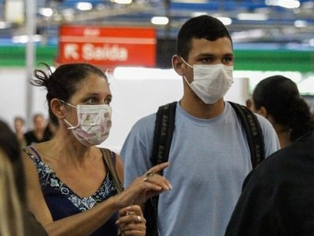

Cientistas australianos descobrem defesa imunológica contra Covid-19
Artigo aponta que nosso sistema reage da mesma forma ao coronavírus do que a gripe com base no sangue de pacientes que tiveram a doença.
Paes afirma que 70% dos adultos do Rio já receberam a primeira dose da vacina contra a Covid-19
Prefeito do Rio comemorou resultado em rede social, mas pediu que população mantenha cuidados e não esqueça da segunda dose. 'Ótimas notícias', disse Paes.
Idosa mais longeva da Espanha, de 113 anos, vence a covid-19
María Branyas, nascida em 1907 em San Francisco (EUA), enfrentou o coronavírus na casa de repouso de Olot (Girona), onde mora.
Ministério da Saúde aguarda 41 milhões de doses contra Covid em julho
Previsão vinha sendo comentada por integrantes do órgão, mas foi oficializada em documento publicado na página da pasta nessa quinta-feira.
Ministério da Saúde premia boas práticas de cidades no combate à covid-19
A iniciativa reuniu 1.471 experiências em todo o país.
Fiocruz: Todas as vacinas protegem contra as variantes atuais do coronavírus
Nove estados registram infecções da variante delta.